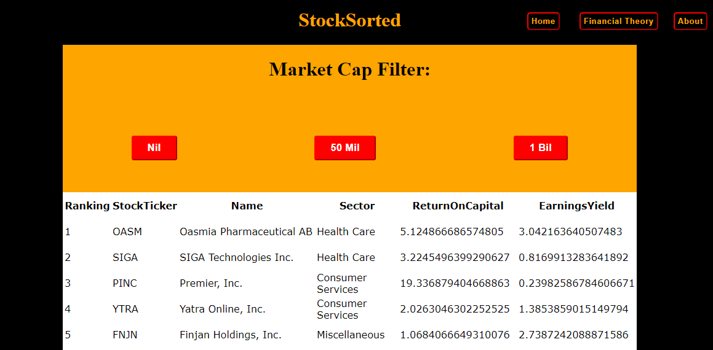

Scrapes Yahoo Finance for all NASDAQ stocks, then posts data into database before performing calculations on data to output a suggested ranking of stocks. The project is based off of the book by Joel Greenblatt, The Little Book that Still Beats the Market.
Languages Used: Python, SQL, PHP, Javascript/JQuery
My main passion is all about learning, anything and everything. Naturally, this thirst for knowledge has led me down the road of studying physics - curiosity of how the world really works. Of course, I am not just interested in only physics and there are a number of areas that pique my interest. One of those is the world of software and web development.
At the moment I am interested in both front (HTML, CSS, Javascript) and back (Python, SQL, PHP) end development which is displayed in my main project being StockSorted. This project was highly enjoyable to create and the process has really pushed my down the path to further pursue software development.
Please feel free to get in touch